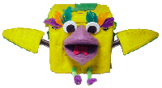
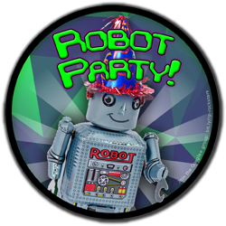

Hi there, my name is Erin RobotGrrl. I enjoy making robots. One of my bots is
RoboBrrd. It evolved from a hobby project to a kit, so that anyone can learn how to build a robotic character. Others include Buddy 4000, Botbait, prototype food slicer, a hockey playing humanoid, dogcow robot, and
more.

Here are some goals that I'm hoping to accomplish through Fab Academy:
- Create a working prototype for my final project robot
- Advance and improve my maker skills with the weekly assignments
- Learn about other projects that are similar to mine, and see how I could add value to them through collaboration
- Understand more about Fab Labs and what it takes to establish and run one
- Observe how the Academany evolves, and maybe think about ideas for a robot class: "How to make friends with (almost) any robot"
My remote guru is
Shawn Wallace from
AS220. The Fab Lab where I'll be completing some of the lab work is
EchoFab. Excited to learn how to make (almost) anything!

Hey! You! If you are interested in building robots, join the
ROBOT PARTY! It's a Google+ Hangout with robot builders from all over the world who show off what they have made, and what works / what didn't work.
You can reach me through
email or
twitter. Time to get back to the robots! (motors whirring sound)